智能无人系统
第一章和第七章 无人驾驶平台和系统
第一章
SAE自动驾驶分级标准
| 层级 | 名称 | 详细描述 |
|---|---|---|
| Level 0 | 无自动化 | 无自动控制功能。 |
| Level 1 | 单一功能级自动化 | 无法做到手和脚同时不操控。 |
| Level 2 | 部分自动化 | 在某些预设环境下可以不操作汽车，即手脚同时离开控制。 |
| Level 3 | 有条件自动化 | 特定条件部分任务。 |
| Level 4 | 高度自动化 | 特定条件全部任务。 |
| Level 5 | 完全自动化 | 全部条件全部任务。 |
传感器平台
主流的无人驾驶传感平台以激光雷达和车载摄像头为主，并呈现多传感器融合发展的趋势。需要了解各类传感器（激光雷达、毫米波雷达、摄像头、GPS/IMU、V2X通信传感系统）的检测原理、优势、劣势以及功能。
1. 激光雷达 (LiDAR) 与 毫米波雷达 (Radar)：
激光雷达 (LiDAR)
- 核心原理：利用光进行“回声定位”。
- 测距技术：飞行时间法 (ToF)。
- 公式： $r =\frac{1}{2}ct$（c为光速，t为往返时间）。
- 适用性：测距精准（厘米级），能区分车道线；缺点是受雨雪雾天气影响大。
- 分类：
- 机械式：360°扫描，但体积大、成本高、易损耗。
- 半固态：内部微动（MEMS/转镜），适合车规量产。
- 固态：无机械部件（Flash/OPA），耐用且成本低，是未来方向。
毫米波雷达 (Radar)
- 核心优势：全天候工作，穿透力强（抗雨雾）。
- 频段：
- 24GHz：短距离（盲点监测）。
- 77GHz：主流，探测距离远、精度高、体积小。
2. 摄像头 (Camera)：
- 特点：
- 优点：语义识别能力强（红绿灯、路牌），信息丰富，成本低。
- 局限：受光线影响大（怕黑、怕逆光），测距不如雷达。
- 类型与位置：
- 前视：挡风玻璃处，用于识别行人、车辆（ACC/AEB）。
- 环视：车身四周，用于全景泊车。
- 后视/侧视：用于倒车及盲区检测。
3. GPS 与 IMU (组合导航)：
对比分析
| 特性 | GPS (全球定位系统) | IMU (惯性测量单元) |
|---|---|---|
| 原理 | 接收卫星信号算绝对坐标 | 靠陀螺仪/加速度计算相对位移 |
| 优点 | 无累积误差 | 频率高，不怕遮挡 |
| 缺点 | 信号易受遮挡（隧道/高楼），更新慢 | 误差随时间累积 |
融合优势 (互补)
- GPS 修正 IMU：用 GPS 的绝对位置消除 IMU 的累积误差。
- IMU 填补 GPS：在 GPS 信号丢失（如隧道）时，IMU 继续推算位置。
- 算法：通常使用卡尔曼滤波 (Kalman Filter) 进行数据融合。
4. V2X 通信传感系统：
- 三大优势：
- 覆盖广：实现“超视距感知”（如几公里外的路况）。
- 避盲区：解决视线遮挡问题（如路口盲区）。
- 更安全：通过数字证书防篡改。
- 政策与标准：
- 如欧盟 PRESERVE 项目，建立了安全架构和证书体系，保障信息不被黑客伪造。
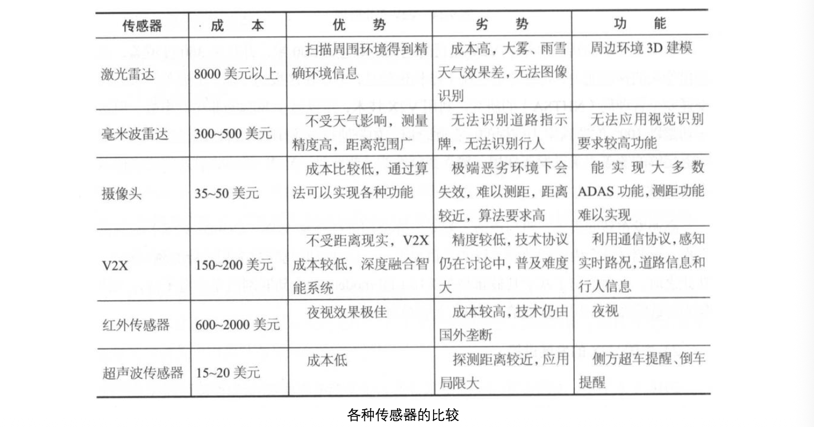
- GPS+惯导：开阔环境首选，绝对定位能力强，GPS怕遮挡。
- 激光SLAM：几何特征丰富环境首选，精确但成本高、怕恶劣天气。
- 视觉SLAM：纹理特征丰富环境可用，成本低但怕弱纹理、光照变化。
- 纯惯导(IMU)：短期备用方案，任何环境都能工作但误差累积。
| 环境场景 | 主传感器 | 辅助传感器 | 为什么这样配 |
|---|---|---|---|
| 无GPS+有结构 | 激光雷达 | IMU | 激光提供绝对位置，IMU填补扫描间隔 |
| 有GPS+开阔地 | GPS | IMU | GPS提供全局定位，IMU提高更新频率 |
| 有GPS+有纹理 | 视觉+GPS | IMU | 视觉提供局部精度，GPS防止漂移 |
| 恶劣天气 | GPS+IMU | - | 激光/视觉受影响，回归最可靠组合 |
多传感器融合：卡尔曼滤波
第七章
1. 计算平台
| 解决方案 | 核心特点 | 优势与适用场景 |
|---|---|---|
| GPU (图形处理器) | 并行计算能力强 | 擅长处理大规模并行任务，非常适合深度学习和图像处理（如训练神经网络）。 |
| DSP (数字信号处理器) | 擅长数字信号处理 | 适合处理连续的模拟信号转换成的数字信号（如音频、雷达信号处理），数学运算能力强。 |
| FPGA (现场可编程门阵列) | 硬件可重构 | 灵活性极高，可以根据需要重新编程硬件逻辑，低延迟，能耗比通常优于 GPU。 |
| ASIC (专用集成电路) | 专用定制 | 为特定功能量身定制，性能最高、功耗最低、体积最小，但不可更改，研发成本高。 |
2. 控制平台
控制平台是连接算法与执行机构的桥梁，主要包括两大部分：
- ECU (电子控制单元)：分布在车内的“小脑”，负责运行具体的控制算法（如控制发动机喷油、刹车防抱死等）。
- 通信总线：连接各个 ECU 和机械部件的“神经纤维”，负责传输指令和状态信息。
3. 通信网络协议
不同总线根据速率和可靠性适用于不同的场景：
| 协议名称 | 定位与特点 | 工作机制 | 适用场景 |
|---|---|---|---|
| LIN (局部互联协议) | 低速、低成本 | 主从模式（Master-Slave） | 车身电子 （如车窗、雨刮器、后视镜调节） |
| CAN (控制器局域网) | 中速、行业标准 | 仲裁机制（优先级判断）、多主结构 | 车辆底盘控制 （如发动机、变速箱、ABS），应用最广泛 |
| FlexRay | 高速、高可靠性 | 时间触发 (Time-Triggered) + 事件触发 | 线控系统 (X-by-Wire) （如线控转向、线控刹车），确保数据零延迟、零出错 |
4. 无人驾驶的安全性（四大安全）
无人驾驶系统安全性核心考点总结
（1）. 传感器的安全 (感知层)
- 常见攻击方式：
- 致盲攻击：使用强光或激光干扰摄像头，使其“失明”。
- 欺骗攻击：伪造 GPS 信号，或使用对抗样本（如在路牌上贴贴纸）误导算法。
- 核心防御策略：多传感器融合
- 利用激光雷达、毫米波雷达和摄像头的不同特性进行交叉验证，不依赖单一信源。
（2）. 操作系统的安全 (软件层)
- 主要威胁：节点劫持
- ROS (机器人操作系统) 内部节点通信若缺乏验证，易被黑客控制发送错误指令。
- 核心防御策略：隔离技术
- 容器技术 (如 Docker) 和 沙盒 (Sandbox)：将节点隔离在独立环境中运行，防止病毒或故障扩散。
（3）. 控制系统的安全 (执行层)
- 入侵方式：通过 OBD 接口或无线网络侵入 CAN 总线，发送伪造的刹车/转向指令。
- 核心防御策略：加密与验证
- ECU 在执行指令前必须校验数字签名，确保指令来源合法且未被篡改。
（4）. 车联网通信系统的安全性 (V2X 网络层)
- 主要威胁：消息伪造（假绿灯）、篡改路况信息、隐私泄露。
- 核心防御策略：PRESERVE 三层防护架构
- 硬件层：使用 HSM (硬件安全模块) 物理隔离存储密钥。
- 软件层：部署防火墙和入侵检测系统。
- 安全证书：建立 PKI 数字证书体系，确保每一条 V2X 消息都是真实可信的。
第二章 定位方法以及传感器应用
章节核心逻辑：无人驾驶系统如何解决两个终极问题？
- “感官”：用传感器感知周围环境（雷达、相机）。
- “大脑”：用算法（定位、滤波）确定自己在哪、状态如何。
SLAN：同步定位与地图构建。主要有：激光SLAN & 视觉SLAN
第一部分：硬件传感器
1. 激光雷达（激光SLAN）
- 原理：飞行时间法 (ToF)。发射激光束，计算往返时间测距。
- 公式：$r = \frac{1}{2} c t$
- 特性：
- 3D激光雷达采集到的信息叫做点云。将点云与全局地图进行迭代匹配（ICP）
- ✅ 精度极高，测距远，分辨率高，隐蔽性好，抗干扰能力强
- ❌ 成本高，易受雨雪雾天气干扰（噪声大）
- 考点：它是L4/L5级自动驾驶的核心传感器。
2. 摄像头
- 原理：被动接收环境光。
- 分类与应用 (🎯 学长考题重点)：
- 单目 (Monocular)：前视感知，识别人、车、车道线、红绿灯。
- 双目 (Stereo)：通过视差原理测距。
- 鱼眼 (Fisheye)：视野极大 (>180°)，专门用于倒车影像、360°环视（图像有畸变）。
- 特性：
- ✅ 纹理信息丰富，便宜。
- ❌ 受光照影响大（逆光、黑夜致盲），测距精度不如雷达。
3. 毫米波雷达
- 原理：多普勒效应。
- 特性：
- ✅ 穿透力强（无视雨雪雾），测速特别准。
- ❌ 分辨率低（看不清物体轮廓，只能知道“有东西”）。
第二部分：定位算法
1. 激光SLAN：ICP vs NDT (⭐⭐⭐ 必考对比)
（1）ICP：


| 优点 | 缺点 |
|---|---|
| 效果精确 | 耗时大，效率低 |
| 不必数据处理 | 可能陷入局部最优 |
| 较好收敛性 | 需要噪声处理 |
（2）NDT：


总结：
把“刚才看到的”（实时点云）和“记忆中的”（高精地图）拼在一起。
| 特性 | ICP (迭代最近点) | NDT (正态分布变换) |
|---|---|---|
| 通俗理解 | 硬碰硬。每个点都去找地图上离它最近的点，强行拉近。 | 概率流。把地图划成格子，看现在的点落在哪个概率最高的格子里。 |
| 核心原理 | 最小化点对点欧氏距离。 | 计算网格内的高斯概率密度函数 (PDF)。 |
| 优点 | 精度极高（前提是初值给得好）。 | 速度快，鲁棒性强（容错率高，初值差一点也能对上）。 |
| 缺点 | 慢，容易拼错（陷入局部最优）。 | 精度略逊于精细的ICP。 |
2. 视觉SLAM

- 视觉前端特征 (🎯 填空题重点)：
- 角点 (Corner)：如 Harris, FAST。
- 斑点 (Blob)：如 SIFT（最准最慢）。
- ORB特征：Oriented FAST (带方向角点) + BRIEF (二进制描述子)。速度极快，适合实时系统。
- 回环检测 (Loop Closure)：
- 利用词袋模型 (BoW) 判断“我是否来过这里”，消除累积误差。


第三部分：定位系统
1. 坐标系转换 (⚠️ 判断题陷阱)


- 转换链条：
GPS输出的经纬度信息$\rightarrow$ECEF (地心地固)$\rightarrow$导航坐标系 (ENU/NED)$\rightarrow$车体坐标系 (Body) - 关键点：
- ENU：东北天坐标系（指北坐标系）。
- ECEF：随地球自转。
- 考题避坑：通常不能直接从 ECEF 旋转得到车体坐标系，中间必须经过局部切平面（导航坐标系），否则无法描述“东南西北”。
2. 基于GPS +惯性组合（IMU）导航的定位系统
（1）GPS：

- RTK：载波相位动态实时差分，定位误差在城市中也可达到10～50m（一般GPS为10～100m）
- 差分GPS定位：通过在一个精确的已知位置（基准站）上安装GPS监测接收机，计算得到基准站与GPS卫星的距离，然后再根据误差修正结果，从而提高了定位精度。
- 伪距法定位：
- 优点：速度快、无多值性问题、虽然精度低，但是满足大部分需求。


（2）惯性测量单元：


总结：
- GPS (全球定位系统)：提供绝对位置。
- 缺点：更新慢 (10Hz)，易被遮挡（隧道、高楼峡谷）。
- RTK技术：利用基准站差分，将精度提升至厘米级。
- IMU (惯性测量单元)：提供相对推算。
- 组成：加速度计（测比力/加速度）+ 陀螺仪（测角速度）。
- 原理：航位推算。
- 缺点：误差随时间累积（积分漂移）。
- 融合逻辑：GPS负责“纠偏”（消除累计误差），IMU负责“填空”（高频输出，保证信号不断）。
（3）惯性导航系统（INS）：


第四部分：卡尔曼滤波
这一部分数学最难，重点掌握逻辑和公式。
- 卡尔曼滤波：是一种利用线性系统状态方程，通过系统输入输出观测数据，对系统状态进行最优估计的算法。
- 基本思想：利用
前一时刻的估计值和现时刻的观测值来更新对状态变量的估计，求出现在时刻的估计值。
1. 卡尔曼滤波 (KF) —— 线性系统的最优估计
- 核心逻辑：加权平均。
- 模型算出一个值（预测），传感器测出一个值（测量）。
- 谁方差小（谁靠谱），我就信谁多一点。
- 五大核心公式 (📝 建议默写)：
- 预测状态：$\hat{x}_k^- = A \hat{x}_{k-1} + B u_k$
- 预测协方差：$P_k^- = A P_{k-1} A^T + Q$ (Q: 模型噪声)
- 卡尔曼增益：$K_k = P_k^- H^T (H P_k^- H^T + R)^{-1}$ (R: 测量噪声)
- 理解：$R$ 越大（测量烂），$K$ 越小（不信测量）；$Q$ 越大（模型烂），$K$ 越大（信测量）。
- 状态更新：$\hat{x}_k = \hat{x}_k^- + K_k (z_k - H \hat{x}_k^-)$
- 协方差更新：$P_k = (I - K_k H) P_k^-$
| 局限性 |
|---|
| 实时性不能满足 |
| 可靠性降低 |
| 对于非线性系统效果不佳 |
2. 进阶滤波：EKF vs UKF (⭐⭐ 简答题)
解决非线性问题（如车在转弯、雷达测距是弧线）。
- 扩展卡尔曼滤波 (EKF)：
- 方法：线性化:用线性变换近似非线性变换。用泰勒级数展开（保留一阶导数），算出雅可比矩阵 (Jacobian)。
- 缺点：雅可比矩阵难算，忽略高阶项有精度损失。
- 考点：EKF近似的是非线性函数本身。
- 无损卡尔曼滤波 (UKF)：
- 方法：无损变换。选几个代表点（Sigma Points）去通过非线性函数，近似出新的概率分布。
- 优点：不用算雅可比，精度通常更高。
3. 运动模型
- CTRV (Constant Turn Rate and Velocity)：恒定转弯率和速度。这是描述车辆运动最常用的模型。
4. 传感器融合架构
- 顺序滤波 (Sequential Filtering)：
- 逻辑：一次预测，多次更新。
- 场景：激光雷达和毫米波雷达的数据不同时到达。先用激光更新卡尔曼滤波，结果作为初值，马上再用毫米波更新。
📝 考前抢分 CheckList (必背)
- 倒车影像用什么镜头？ $\rightarrow$ 鱼眼 (Fisheye)
- 指北坐标系通常指什么？ $\rightarrow$ ENU (东北天)
- ICP和NDT谁更快更鲁棒？ $\rightarrow$ NDT
- EKF的核心数学操作是什么？ $\rightarrow$ 泰勒展开 / 计算雅可比矩阵
- SLAM常用视觉特征？ $\rightarrow$ ORB, SIFT, 角点
- 卡尔曼增益K变大说明什么？ $\rightarrow$ 说明更相信测量值 (或者模型预测的不确定性Q变大了)。
第三章 深度学习和视觉感知
第一部分：路缘石检测
1. ROI提取 (感兴趣区域)
- 获取原始点云，只保留车身周围一定范围内的点（去除无关背景）。
2. 点集左右划分
- 将点云按照激光雷达的扫描线（车身前向射线）进行划分。
3. 路缘石点提取
- 在每一条射线上，利用几何特征（如高度突变、坡度变化）找到疑似路缘的点。
- 左右子点集划分：将找到的点分为“左侧路缘点集”和“右侧路缘点集”。
4. 提取与拟合
- 利用最小二乘法或RANSAC算法，将点拟合成平滑的曲线（通常是三次样条曲线），得到最终的路缘线。
补充：坐标系变换
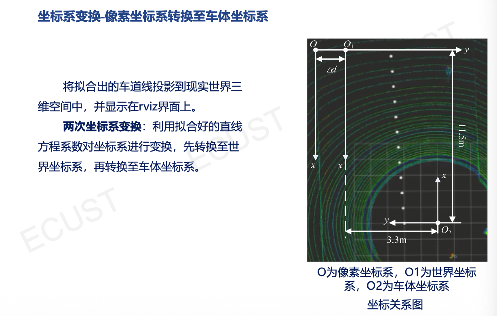
第二部分：卷积神经网络（CNN）
卷积与前馈神经网络区别：
- 用卷积运算代替矩阵乘法运算
- 传统全连接神经网络不足：计算/储存要求高（参数大）、易过拟合
- CNN优势：稀疏交互、权重共享、等变表示
CNN的三大特性：
- 稀疏交互：卷积核大小远小于输入图像，每个输出神经元只与局部输入连接（效率高）。
- 参数共享：同一个卷积核在整张图上滑动，用的是同一组参数（储存空间少）。
- 等变表示：输入平移，输出也跟着平移。
核心组件：
- 卷积层：提取特征。
- 池化层：用相邻位置的总体统计特征来替换该位置的值，起到降维、减少参数、防止过拟合的作用。（最大池化、平均池化）
- 激活函数：引入非线性（如 ReLU）。
第三部分：YOLO
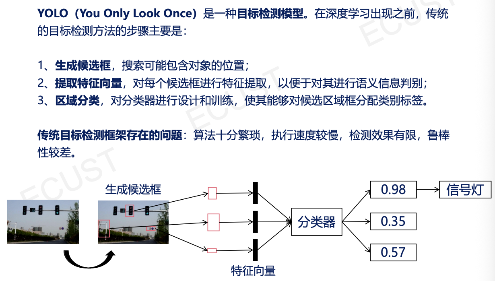
1. YOLO的核心思想
- 不需要生成候选区域，直接把图像划分成 S×S 的网格，每个网格负责预测中心落在该格子里面的物体。
- 速度快，适合无人驾驶实时感知。
2. YOLOv3的特征提取
特点：
- 有53个卷积层
- 输出图像尺寸：416x416x3
- 连续使用卷积层和跳跃连接层
图像金字塔：
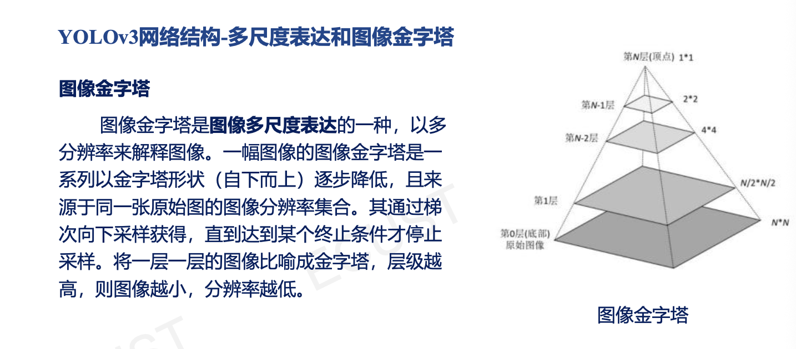
- 图像金字塔-向下采样：删除图像偶数行列，大小变为四分之一。
- 图像金字塔-向上采样：补充大量像素点0，大小变为四倍。
（注意：两种操作互相是不可逆的。）
多尺度特征预测：
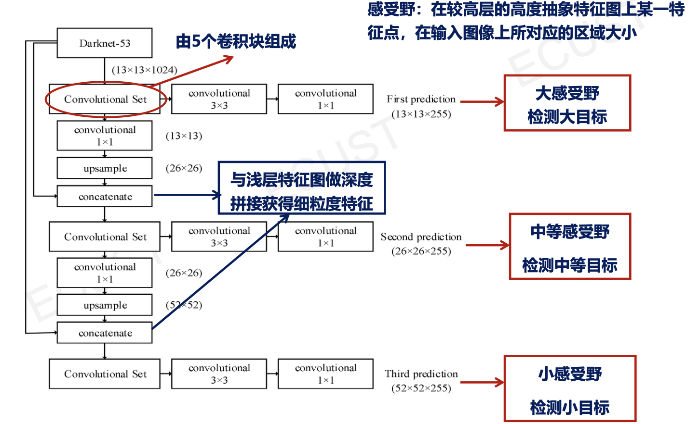
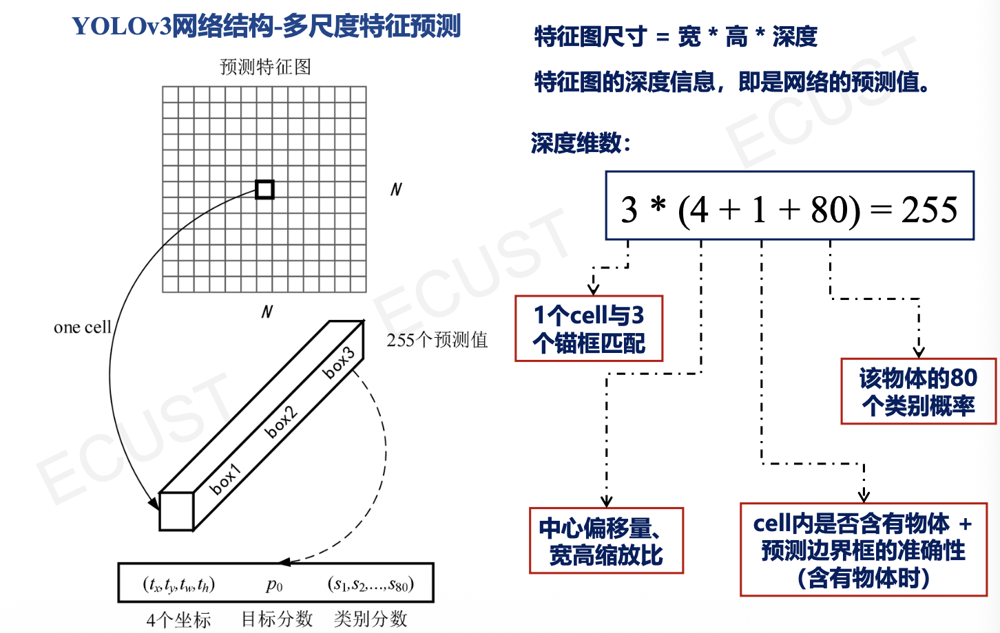
交并比：
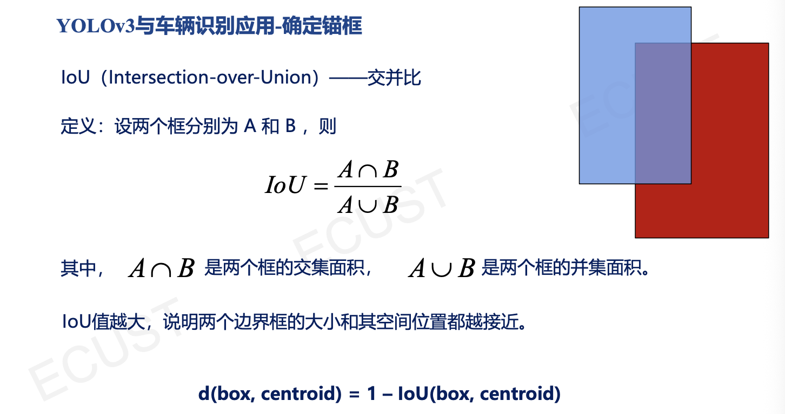
边界框坐标计算：
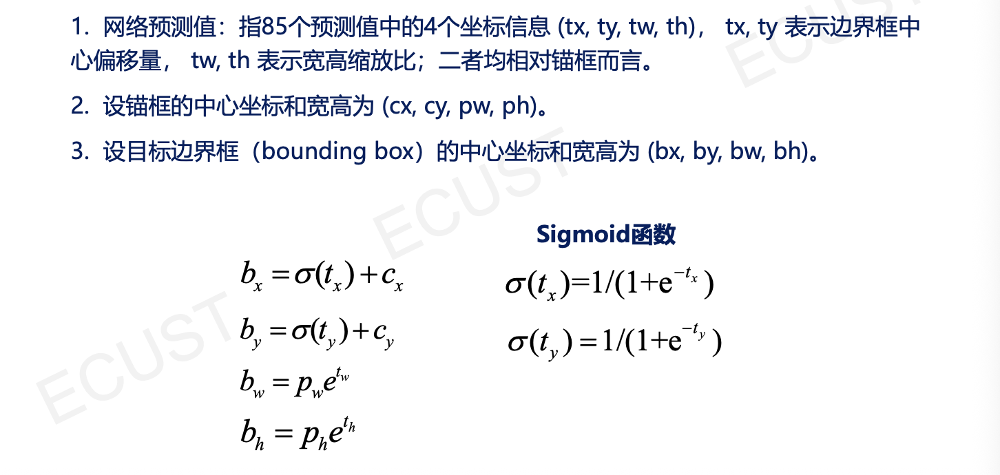
- $(b_x,b_y)$为中心坐标。
- $b_w,b_h$进行了尺度缩放。
- Sigmoid函数作用：将$t_x,t_y$压缩到[0,1]区间内，确保预测边界在网格内，防止偏移过多。
- 指数函数e的作用：确保缩放后的宽高为正。
第四章 迁移学习和强化学习
第一部分：迁移学习
- 意义：
- 解决大数据和少标签之间的矛盾。
- 解决大数据和弱计算之间的矛盾。
- 解决普适化模型和个性化需求之间的矛盾。
- 满足特定应用需求。
为什么需要“迁移学习”？
- 收集数据难、标注难。
- 冷启动的问题（新环境没有数据）。
- 个性化模型很复杂。
迁移学习的四种方法
- 基于（ ）的迁移
- 实例：找到与目标相似的样本。
- 特征：把两个领域的数据变换到同一个特征空间。
- 模型：共享模型参数。
- 关系：挖掘逻辑关系。
第二部分：端到端无人驾驶
基本思路：
- 采集数据：摄像头拍摄的图像
- 网络训练：通过神经网络训练的数据来做出决策
- 测试：通过训练的模型来控制车辆，例如方向盘的转角、刹车、油门、
代表模型：ALVINN、NVIDIA PilotNet
- 输入：摄像头拍摄的图像
输出：车辆控制指令（方向盘的转角）
优点：不需要复杂规则设计，系统简单，能利用海量数据。
- 缺点：安全性难以保证，出事难追责。
第三部分：强化学习
- 强化学习：没有监督者，数据不需要带标签，只有一个
奖励信号，还可能是延时的。
1. 核心五要素
- 个体（Agent）：智能体。
- 环境（Environment）：与Agent交互的事物。
- 动作（Action）：Agent的行为。
- 状态（State）：Agent从环境获取的信息。
- 奖励（Reward）：行为的反馈。
（学习目标是最大化累计奖励）Agent先从Environment中获取一个State，然后根据这个状态做出Action并反馈给环境，获取Reward。
2. 马尔可夫决策过程
- 马尔可夫性：系统的下一个状态只跟当前状态有关，与过去状态无关。
马尔可夫决策过程（MDP）：
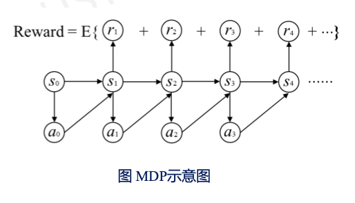
- $S为有限状态空间集合。$
- $A为有限动作的集合。$
- $P为状态转移概率。$
- $R为奖励函数。$
从$Start \rightarrow End$的过程是一个序列决策问题，要选择路线以找到最大收益，这使得我们需要一个策略。
- 确定性策略：相同状态下输出动作是确定的。
- 不确定性策略：按照概率大小输出不同的输出动作。
累计期望奖励：
其中，$\gamma$为折扣因子 $\in[0,1)$，用来估算未来对现在的影响。
值函数：
- 作用是量化每一个行动对最终的最大化长期回报的目标的贡献。
状态s下的值函数：
状态+行为-值函数：
最优状态-值函数：
- 值函数最大的策略，即：$V^*(s)=max (v_\pi(s))$
（最优状态行为-值函数同理。）
第三部分总结：
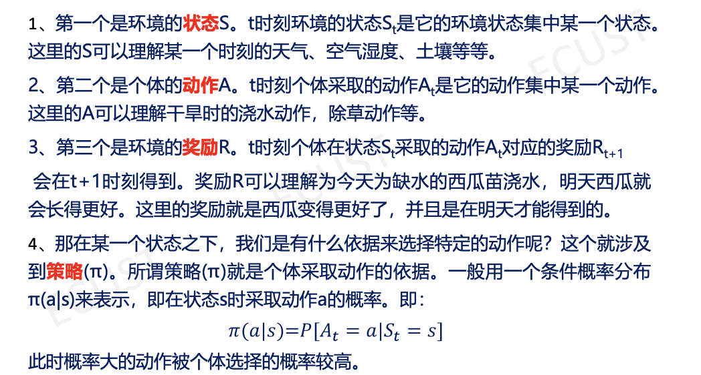
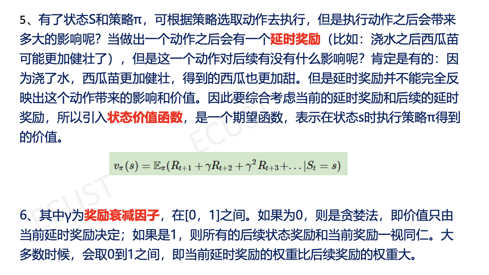
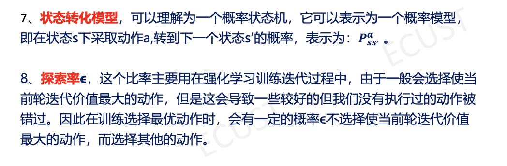
第四部分：Q-learning
实质上就是基于奖励机制的学习算法。
Q-learning
更新公式：
$Q(s_t, a_t)$ 是在状态 $s_t$ 下采取动作 $a_t$ 的长期回报，是一个估计 Q 值。
- $r_{t+1}$ 是在状态 $s_t$ 下采取动作 $a_t$ 得到的回报 reward。
- 指的是在状态 t+1下所获得的最大 Q 值（直接看 Q-table，取它的最大化的值）。
- $\gamma$ 是折扣因子(若$= 0 \rightarrow$ 则短视，只注重眼前奖励,反之是远视，长远考虑)。
- 即为目标值，就是 时序差分目标，是 $Q(s_t, a_t)$ 想要逼近的目标。$\alpha$ 是学习率，衡量更新的幅度。
- 注意：$max Q(s_{t+1},a)$ 所对应的动作不一定是下一步会执行的实际动作。这里引出 $\varepsilon$-greedy，即 $\varepsilon$-贪心算法。
$\varepsilon$-贪心算法
- exploration：探索环境，通过尝试不同的动作来得到最佳策略（带来最大奖励的策略）
- exploitation：不去尝试新的动作，利用已知的可以带来很大奖励的动作。
- 目的是获得一种长期收益最高的策略，这个过程可能对short-term reward有损失。
- 如果exploitation太多，那么模型比较容易陷入局部最优，但是exploration太多，模型收敛速度太慢。这里面临一个权衡问题，即怎么通过牺牲一些短期的奖励来理解动作，从而学习到更好的策略。
DQN
- 问题：传统的Q-learning用表格存Q值 (Q-Table)。如果状态太多（比如输入是图像），表格存不下。
- 解决：用神经网络来代替表格，估算Q值。
- 输入当前画面，利用神经网络提取特征，输出每个动作的Q值。
- 思想：
- 经验回放：
- 问题：开车时，上一秒是在直行，下一秒通常还在直行。数据之间关联性太强，一直学相似的东西，神经网络容易过拟合。
- 解决：我们不直接学刚才发生的事，而是把智能体经历过的所有事情 $(s, a, r, s’)$ 存进一个经验池。
- 操作：训练时，从经验池里随机抽取一批数据来学习。打破了数据的时间相关性，让学习更全面。
- 目标网络：用一个目标网络来对当前网络来进行打分，可以提高稳定性。
- 经验回放：
策略梯度
- DQN 的问题：
- 无法处理连续动作：DQN 输出是离散的（如上下左右），但方向盘角度是连续数值，无法建立无限大的表格。
- 死循环风险：确定性策略在相同状态下永远做相同选择，容易在特定场景（如迷宫死胡同）原地打转。
- 策略梯度的方案：
- 不计算 Q 值，而是训练一个神经网络（策略网络 $\pi_\theta$）。
- 输入：状态 $s$。
- 输出：动作的概率分布（直接告诉智能体每个动作被选中的概率）。
策略梯度的核心逻辑是：“先凭直觉试一试，如果结果好，就增加刚才那些动作的概率；如果结果差，就减少。”
第一步：试错 (Sampling)
- 让智能体用当前的策略网络 $\pi_\theta$ 与环境交互，跑完一整轮（Episode）。
- 记录轨迹：$\tau = {s_1, a_1, r_1, s_2, a_2, r_2, \dots, s_T, a_T, r_T}$。
第二步：打分 (Evaluation)
- 计算这一轮的总得分（累计回报）：$R(\tau) = \sum r_t$。
判据：总分高说明这一轮的动作序列整体是好的。
利用梯度上升更新参数 $\theta$，目标是最大化期望回报 $J(\theta)$。
- 核心公式：
- 如果 $R(\tau)$ 是正的高分 $\rightarrow$ 大幅增加该动作的概率。
- 如果 $R(\tau)$ 是负分 $\rightarrow$ 减少该动作的概率。
| 比较维度 | 策略梯度 (Policy Gradient) | 价值方法 (DQN) |
|---|---|---|
| 输出内容 | 动作概率 (直接输出策略) | 动作价值 (Q值) |
| 动作空间 | 支持连续动作 (如方向盘转角) | 仅支持离散动作 (如按键) |
| 策略类型 | 随机策略 (Stochastic) | 确定性策略 (Deterministic) |
| 稳定性 | 较低 (方差大，容易受单次结果影响) | 较高 (有目标网络等机制) |
DDPG（深度确定性策略梯度）
为了解决策略梯度“由一整轮结果决定成败，方差太大”且梯度计算困难的问题，引入了 Actor-Critic 框架。
Actor-Critic 结构：
- Actor (演员)：策略网络，负责动作。
- Critic (评论家)：价值网络，负责打分（代替“整轮总分”）。
- 改进点：Critic 每一步都给 Actor 反馈，不需要等游戏结束，学习效率更高，算法更容易收敛。
DDPG：
无人驾驶控制的核心算法，共包含4个神经网络。结合了 DQN 和 Actor-Critic 的优点：
- 结构：Actor-Critic (一个做动作，一个打分)。
- 机制 1：经验回放 (Replay Buffer) $\rightarrow$ 打破数据关联性。
- 机制 2：目标网络 (Target Network) $\rightarrow$ 稳定训练目标。
- 适用场景：连续动作空间的精准控制。
第五章 无人驾驶规划
第一部分：路径规划（A-star算法）
- 目标：寻找最短路线。
深度/广度优先搜索
深度优先搜索：
- 沿着一条路径不断往下探索。
- 栈的性质：
先进后出
广度优先搜索：
- 由起点开始，由近及远搜索。
- 栈的性质：
先进先出
1. Dijkstra算法
- 核心思想：由近到远把所有点点最短路径算出来。
- 缺点：效率低下、功耗高。
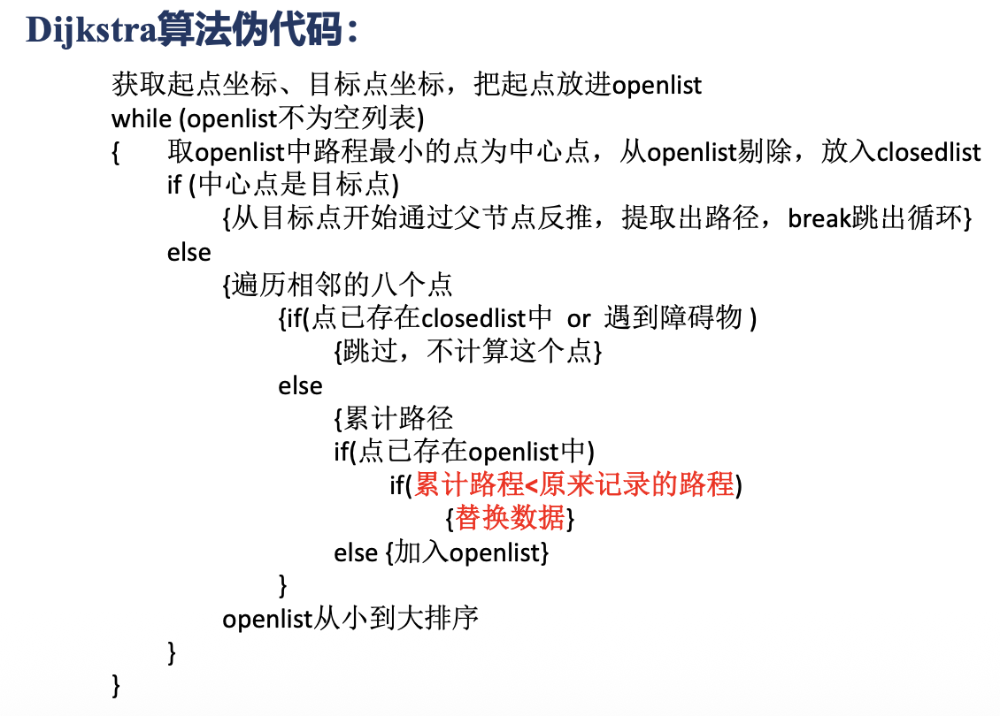
2. A-star算法
在此基础上引入启发函数，得到A-star算法。
启发函数：
- $g(n)$：实际代价（起点到这里，花了多少代价）
- $h(n)$：预估代价（从这里到终点，还需要多少代价）
启发式函数$h(n)$的选择：
- 欧几里得距离 (Euclidean Distance)：两点间的直线距离（适用于允许任意方向移动的场景）。
- 曼哈顿距离 (Manhattan Distance)：城市街区距离（适用于只能横平竖直走的网格地图）。
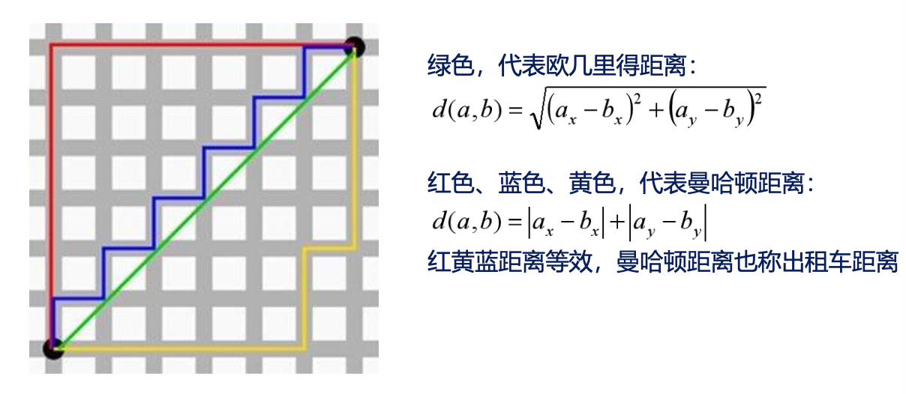
- 关键原则：$h(n)$ 必须小于等于实际代价。如果 $h(n)$ 估得太高，可能会漏掉最优路径；如果估得太低，算法会变慢但仍能找到最优解。
- 特点：既有 Dijkstra 的严谨（保证找到路），又有“贪心算法”的速度（优先往终点方向找）。
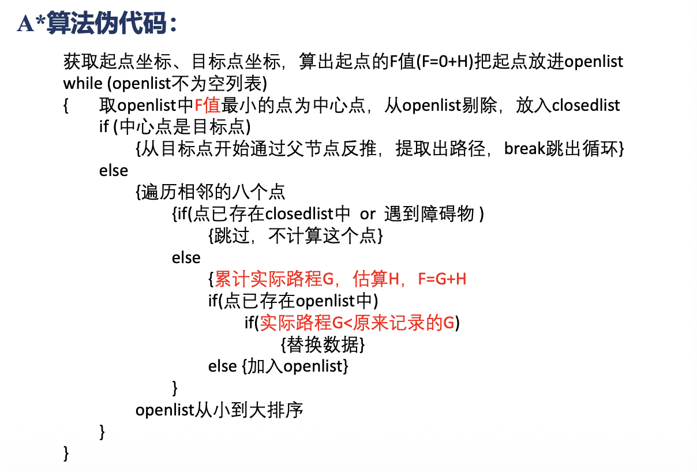
3. 混合A-star
相比于普通A-star（把车看成一个质点），混合A-star加入了车头朝向参数$\theta$.
- 从二维$(x,y)$拓展到三维$(x,y,\theta)$。
- 需要考虑车辆动力学，所以不再是简单地连接相邻个字，而是要生成符合车辆转弯的圆弧路径。
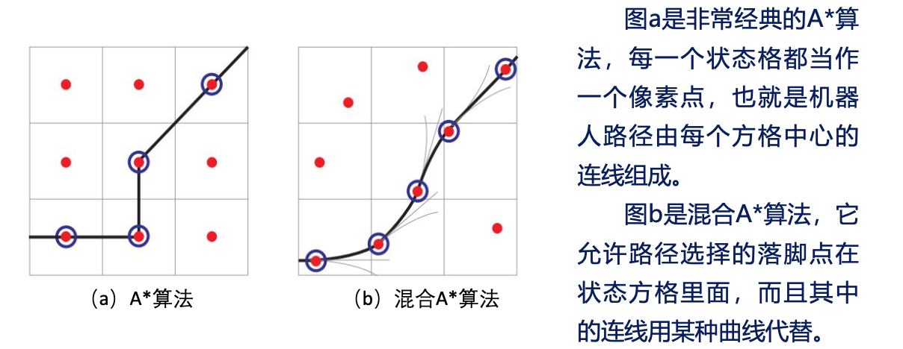
| 算法 | Dijkstra | A* (A-Star) | Hybrid A* |
|---|---|---|---|
| 是否有方向感 | 无 (盲目搜索) | 有 (启发式引导) | 有 (启发式 + 运动学) |
| 公式 | $f(n) = g(n)$ | $f(n) = g(n) + h(n)$ | 同 A*，但考虑 $\theta$ |
| 考虑车辆体积/转弯 | 否 (视为质点) | 否 (视为质点) | 是 (考虑运动约束) |
| 适用场景 | 简单图搜索 | 全局路径规划 | 复杂环境泊车、掉头 |
局部路径规划——TEB算法
第二部分：行为规划（分层有限状态机）
根据当前的交通环境以及全局路线，来做出合理驾驶行为。
- 安全第一，交通法规优先，实时反应
1. 有限状态机
根据外界的输入在有限的状态之间跳来跳去。
- 分类：
- 确定型自动机：对每个输入只有一个精确的转移（一个动作）。
- 非确定型自动机：可以没有/有多个结果。
当状态变得很多，就会变得非常庞大，产生问题：
- 可维护性差
- 可拓展性差
- 复用性差
2. 分层有限状态机
相比与FSM，HFSM引入“超级状态”概念，实现打包管理。
超级状态：将同一类的一组状态视作一个集合（图中大方框），超级状态之间也有转移逻辑。
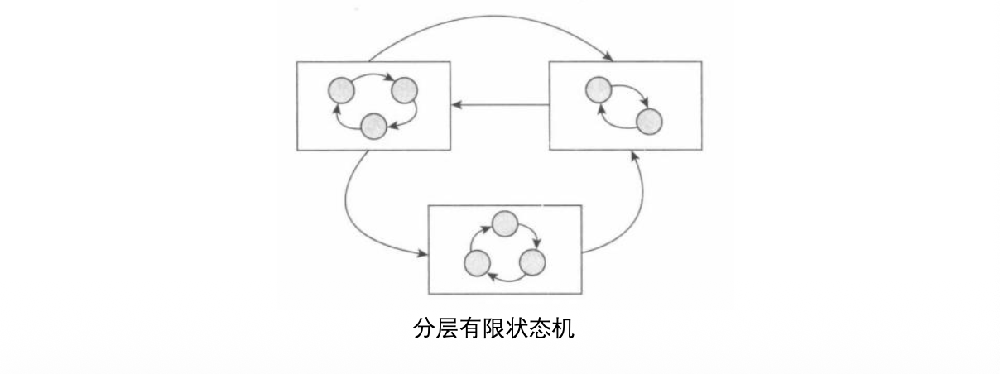
- 斯坦福大学Junior：将顶层的驾驶行为分成了13个超级状态。在无人车正常行驶中，状态机几乎处在普通驾驶模式（即
FORWARD-DRIVE和PARKING-NAVIGATE这两个状态）。
| 优点 | |
|---|---|
| 分层结构 | 减少复杂度 |
| 分层继承 | 提高了可复用性/灵活性 |
| 分层封装 | 提高可读性/可测试性 |
第三部分：路径生成（三次样条插值算法）
- 生成路径基本要求：能够通过车辆控制来执行该路径。
拟合和插值的区别：
- 拟合：不要求通过所有点，讲究神似。
- 插值：要通过所有给定的点。
为什么使用“三次样条插值曲线”（而不是“三次拟合曲线”）？
因为“三次样条插值”生成的曲线符合车辆运动学规律，即：
尽量走直线，在转弯的地方走曲线。
三次样条插值算法的数学性质
- 生成的曲线在衔接点处函数值连续。
- 一阶导数和二阶导数连续可导。
- 自由边界三次样条的边界一阶、二阶导数也是连续的保证速度/加速度连续。
（对于第三点：由于解方程组时，未知数比方程多两个，就会产生自由边界。）
第四部分：动作规划
最优动作序列
Jerk：加速度的变化率，即加加速度。
- 过高的Jerk会引起乘客的不适，所以要研究怎么优化Jerk。
Frenet坐标系
相比于笛卡尔坐标系（东南西北），Frenet坐标系使用道路中心线作为参考线。
- s轴：沿着道路中心线走了多远。
- d轴：偏离中心线多少（左正右负）。
优势：
- 简化了道路曲线拟合的问题，把二维问题简化成一维问题。
- 所以计算也简单了。
- 保持车道只需要保证 $d=0$。
- $s$管速度（停车、巡航）、$d$管方向（变道、避障）。
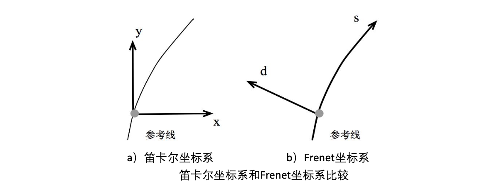
横向、纵向轨迹优化
- 将轨迹优化问题分割为横向&纵向。
- 选取损失函数C，采用使得C最小的轨迹。
1. 横向轨迹的损失函数
主要任务：控制方向（如：车道保持、变道）。
公式：
| 组成部分 | 符号含义 | 惩罚项 | 对应指标 |
|---|---|---|---|
| 舒适项 | Jerk (加加速度)。 防止方向盘打得太急，避免乘客晕车。 |
舒适度 | |
| 效率项 | $k_{t}T$ | 耗时。 防止变道或回正动作拖泥带水，动作要干脆。 |
效率 |
| 偏差项 | 终点横向偏差。 防止规划结束时车子没回正、压线或偏离中心。 |
准确度 |
- 调整惩罚项系数$k_j,k_t,k_d$，可以选择更注重哪个指标。
2. 纵向轨迹的损失函数
主要任务：控制速度（如：跟车、巡航、停车）。
公式 (以车速保持场景为例)：
| 组成部分 | 符号含义 | 惩罚项 | 对应指标 |
|---|---|---|---|
| 舒适项 | Jerk (加加速度)。 防止急刹车或地板油，保证加减速平滑。 |
舒适度 | |
| 效率项 | $k_{t}T$ | 耗时。 防止长时间达不到目标状态。 |
效率 |
| 规则项 | 速度偏差。 : 规划终点速度; $\dot{s_{c}}$: 设定巡航速度。 防止速度不达标（例如限速60却只开40）。 |
规则依从性 |
- 调整惩罚项系数$k_j,k_t,k_s$，可以选择更注重哪个指标。
3. 总损失函数
公式：
- 权重调节 ()：
- (横向权重) 和 (纵向权重) 是人为设定的系数。
- 作用：决定车子是优先保证“走得直”(横向)，还是优先保证“速度准”(纵向)。
碰撞避免
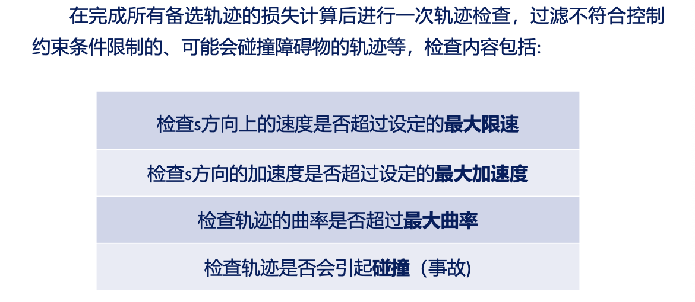
第六章 车辆模型和高级控制
第一部分：车辆模型
1. 自行车模型
该模型做出的假设：
- 忽略车辆在垂直方向上的运动。
- 把前轮和后轮的两个轮胎各自看成一个。
- 看成和自行车一样，前轮控制转角。
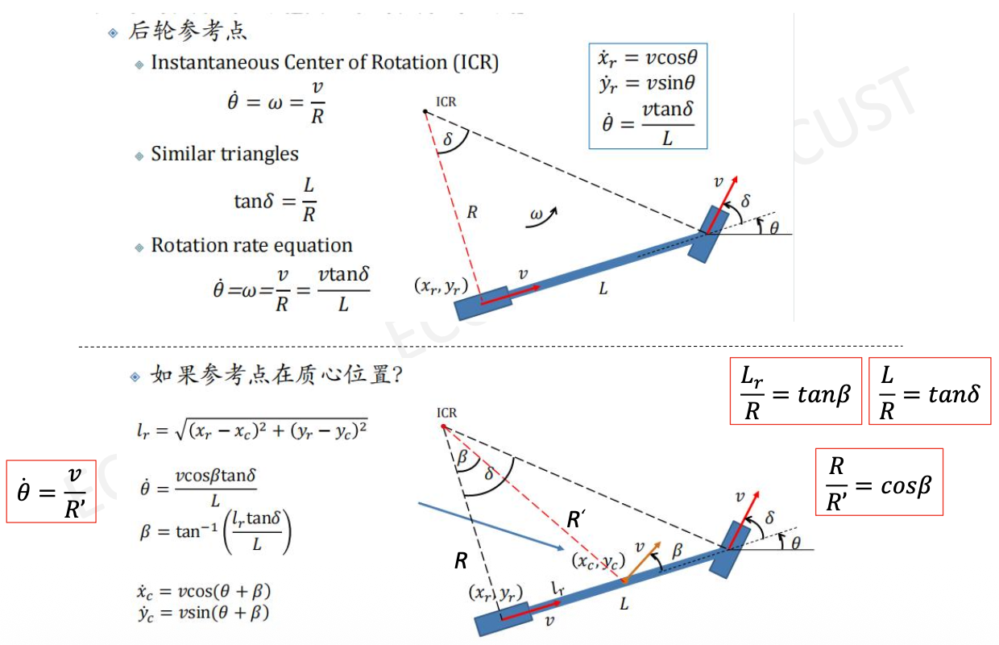
2. 运动学自行车模型
控制输入$(a, \delta_f)$
- $a$ 表示车辆的加速度。踩油门意味着正的加速度，踩刹车意味着负的加速度。
- $\delta_f$ 表示方向盘的转角。假定方向盘转角就是前轮当前的转角。
四个状态量：（位置、偏航角、速度）
- $x$：车辆当前的 $x$ 坐标
- $y$：车辆当前的 $y$ 坐标
- $\psi$：车辆当前的偏航角（用弧度来描述，逆时针方向为正）
- $v$：车辆的速度
相关几何参数：
- $l_f$：前轮到车辆重心的距离
- $l_r$：后轮到车辆重心的距离
更新公式：根据运动学定理，运动学自行车模型中各个状态量的更新公式如下：
其中，$dt$ 表示间隔时间，$\beta$ 又如下的公式计算可得：
滑移角
自行车模型假定后轮的转角控制输入 $\delta_r = 0$。
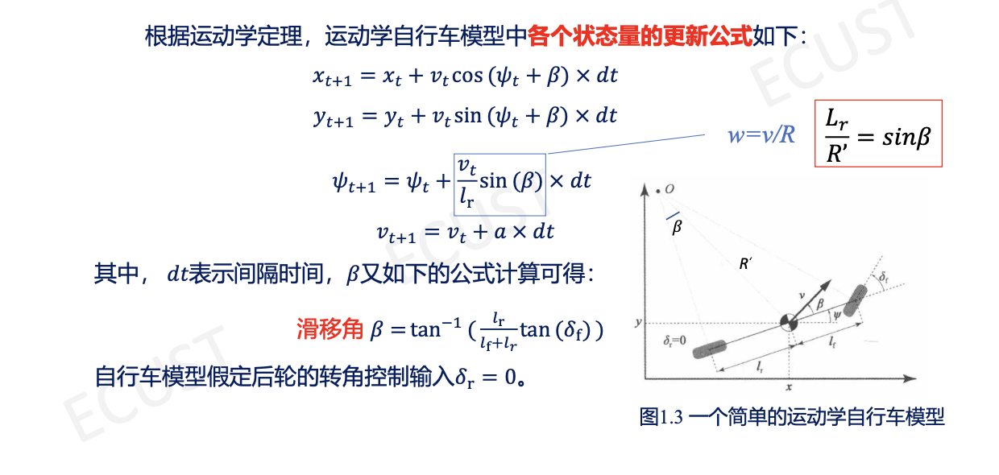
3. 动力学自行车模型
核心思想：当车辆以高速度行驶时，车轮方向不一定是车轮当前的速度方向（侧滑）。
所以该模型考虑了以下两个力：
- 纵向力：使车辆前后移动的力。
- 侧向力：使车辆横向移动的力。
轮胎是车辆运动的一个重要力的来源。
- 体现了由frenet坐标系下车身的纵向和侧向速度来推导笛卡尔坐标系下X和Y两个方向上的车辆行驶速度。
第二部分：PID控制
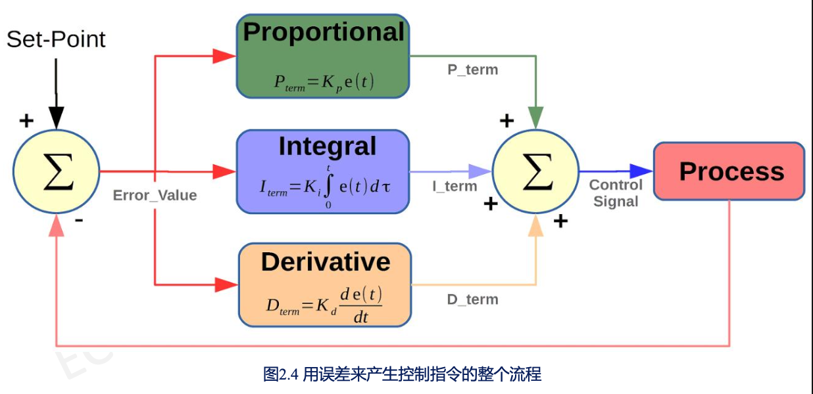
- 比例、积分、微分
1. P控制
该控制器控制的是车辆转角。
- 等值控制是震荡的。
控制输出表示为：
其中，
- $e(t)$表示在$t$时刻下的CTE（车辆到参考线距离）。
- 在合理的数值范围内，$K_p$越大，控制效果越好，即：越快回到参考线附近。
- 但是当CTE和$K_p$都很大时，车辆会失去控制。
2. PD控制
相比于P控制，PD控制引入了CTE变化率这个概念。
- CTE变化率描述了无人车向着参考线方向移动的快慢。
此时控制输出表示为：
其中，
- 增大
P系数$K_p$增大车辆朝着参考线运动的倾向。 - 增大
D系数$K_d$使得转向更平缓(因为转角速度变化更慢了)。
所以有以下两种情况：
P过大，D过小：
- 欠阻尼。
- 无人车将沿着参考线震荡前进。
- 因为P过大，车辆一直要朝向参考线，但是D过小，转角变化率很快，导致车辆不好控制。
P过小，D过大：
- 过阻尼。
- 无人车需要很久才能矫正误差。
- 因为P很小，而且D很大，所以车辆转角变化很慢，而且不倾向于找到参考线。
3. PID控制
因为PD控制很难消除稳态误差，所以引入了积分环节。
控制输出：
其中，
- 积分项本质上是车的实际路线到参考线的图形面积，也就是累积的误差。
- 积分项系数$K_i$的大小影响系统稳定性。
- 过大使得系统震荡，过小会使得汽车收到扰动后需要很久时间才能回到参考线。
PID参数整定方式
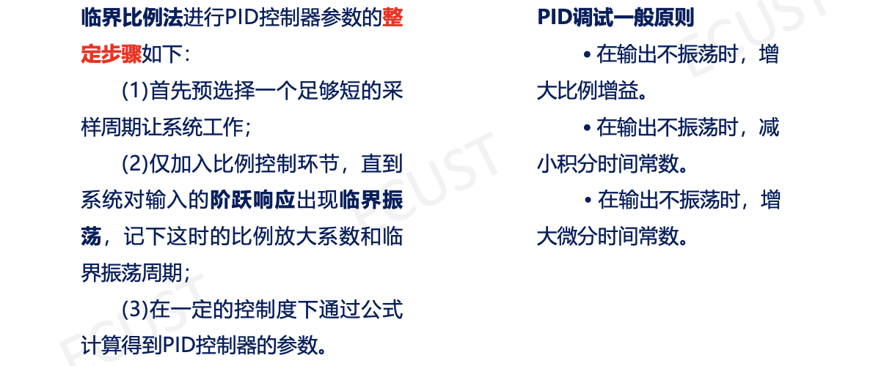
简单来说，就是先P后I最后D.
PID三个环节的总结：
| 环节名称 | 优点 | 缺点 |
|---|---|---|
| 比例环节 (P) | 调整系统的开环比例系数，提高系统的稳态精度，减低系统的惰性，加快响应速度。 | 仅用P控制器，过大的开环比例系数不仅会使系统的超调量增大，而且会使系统稳定裕度变小，甚至不稳定。 |
| 积分环节 (I) | 消除稳态误差。 | 积分控制器的加入会影响系统的稳定性，使系统的稳定裕度减小。 |
| 微分环节 (D) | 使系统的响应速度变快，超调减小，振荡减轻，对动态过程有“预测”作用。 |
第三部分：模型预测控制
传统PID具有延时性，即控制指令会在未来被执行。而模型预测控制可以避免延时问题。
- 将更长时间跨度的控制问题分解为几个更短短跨度问题。
- 包含以下三个因素：
- 预测模型：能够在短时间内预测系统将来的变化。
- 在线滚动优化：通过算法来优化未来一段时间的控制输入，使得损失最小。
- 反馈矫正：到下一个时间点根据新的状态重新预测和优化。
基本步骤：
- 从 $t$ 时刻开始，预测未来 $n$ 步的输出信号。（预测模型）
- 基于模型的控制信号以及相应的输出信号，构造损失函数，并且通过调整控制信号最优化损失函数。（在线滚动优化）
- 将控制信号输入系统。（反馈矫正）
- 等到下一个时间点，在新的状态重复步骤 1。
- 模型预测控制一般应用于无人驾驶
横向控制。
第四部分：轨迹追踪
基于几何追踪的方法————纯追踪
思想：
纯追踪就是基于几何原理，算出要把方向盘打多少度，才能让车画一个圆弧，恰好经过前方那个预瞄点。
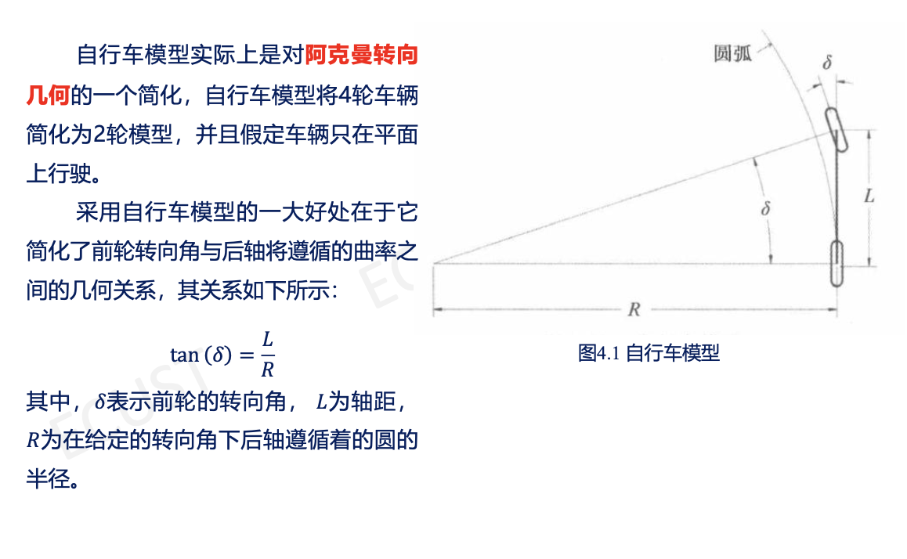
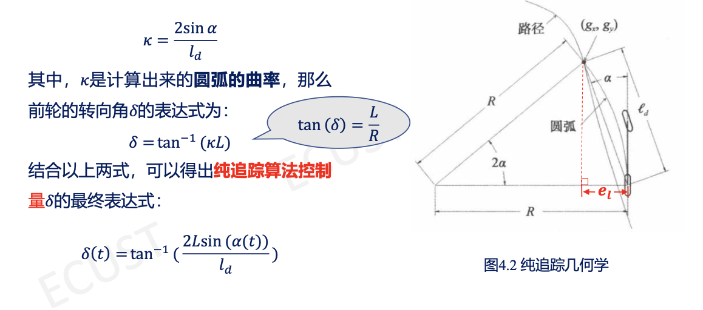
- $(g_x,g_y)$是下一个预瞄点。
- $K$可以表达为：$K =\frac{2}{{l_d}^2} e_l$,纯追踪控制器其实是横向的P控制器。
重点：前视距离$l_d$的参数选择
前视距离 ($l_d$) ：距离目标路径点的前视距离，一般将前视距离表示成车辆纵向速度的线性函数。
- 计算公式
| 前视距离 ($l_d$) 设定 | 优点 | 缺点/问题 | 适用场景与表现 |
|---|---|---|---|
| 较短 ($l_d$ 小) | 追踪精确：车辆能够紧紧贴合参考路径行驶。 | 容易震荡：控制过于敏感，车辆容易在路径左右来回摆动 (Oscillation)，导致行驶不稳定。 | 适用于低速行驶，或者路径曲率变化不大且需要高精度跟踪时。 |
| 较长 ($l_d$ 大) | 轨迹平滑：控制动作更加温柔，车辆行驶更加稳定。 | 转向不足：在急转弯或大曲率路段，车辆会“切内角” (Cut corners)，无法精确经过路径点。 | 适用于高速行驶，为了防止翻车或失控，优先保证车辆的稳定性。 |
| 动态调整策略 | 平衡性能：在不同速度下都能获得较好的跟踪效果。 | 参数整定：需要根据实际车辆特性调整系数 $k$。 | 常用方法：将前视距离设为纵向速度的函数 (通常是线性关系 $l_d = k \cdot v_x$)。 约束：通常会设置一个最大值和最小值来限制前视距离的范围。 |
- 核心结论：前视距离的调整本质上是在“精确性”和“稳定性”之间做权衡。纯追踪算法的关键在于找到适合当前速度的最佳前视距离。